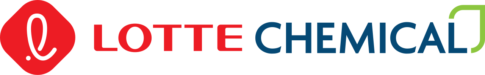

홈 > 브랜드 매거진 > Cosmo Oil
코스모석유 Cosmo Oil
코스모석유는 일본의 정유·석유 정제 및 주유소 운영 기업으로, 현재 지주회사 코스모에너지홀딩스 산하의 핵심 사업회사다. 가솔린, 경유, 윤활유 등 석유제품의 정제와 판매를 축으로 전국적인 주유소망을 운영하며, 에네오스·이데미쓰코산과 함께 일본 정유업계를 대표하는 사업자로 꼽힌다. 브랜드명 '코스모(cosmo)'는 우주를 뜻하는 cosmos와 세계시민을 뜻하는 cosmopolitan에서 따온 것으로, 무한히 확장하는 미래상을 담고 있다.
산업 분야 브랜드·비즈니스 · 공개 등급 편집 검수 · 브랜드 평가 4 ★
한눈에 보는 브랜드
코스모석유는 일본의 정유·석유 정제 및 주유소 운영 기업으로, 현재 지주회사 코스모에너지홀딩스 산하의 핵심 사업회사다. 가솔린, 경유, 윤활유 등 석유제품의 정제와 판매를 축으로 전국적인 주유소망을 운영하며, 에네오스·이데미쓰코산과 함께 일본 정유업계를 대표하는 사업자로 꼽힌다.
브랜드명 '코스모(cosmo)'는 우주를 뜻하는 cosmos와 세계시민을 뜻하는 cosmopolitan에서 따온 것으로, 무한히 확장하는 미래상을 담고 있다.
브랜드 관점
코스모석유의 정체성은 석유 위기 이후 일본 정유업계 재편의 산물이라는 점에서 출발한다. 수요 감퇴와 설비 과잉으로 과당경쟁에 빠진 업계 환경 속에서 중견 정유사들이 통합을 통해 규모와 효율을 확보하려 했고, 그 결과로 탄생한 것이 코스모 브랜드다.
통합 이후에는 단일 브랜드 아래 정제 능력과 판매망을 결집하는 전략을 취했으며, 정유사업의 구조적 한계에 대응해 풍력 등 재생에너지로 사업 영역을 넓히는 다각화 전략을 강화하고 있다. 우주를 모티프로 한 브랜드 세계관은 화석연료 기업이라는 인상을 넘어 미래 에너지 기업으로의 전환 의지를 표현하는 장치로 기능한다.
시작과 성장
코스모석유는 1986년 4월 1일 대협석유(다이쿄석유), 마루젠석유, 그리고 두 회사의 정제 합작사였던 구 코스모석유(정제 전문 코스모) 3사가 합병하여 정식 출범했다. 대협석유는 1939년 니가타현 일대 중소 정유업체들이 합동해 설립된 회사이고, 마루젠석유는 1930년대 초 마루젠광유의 오사카 제유소가 분리되며 세워진 회사로, 양사 모두 오랜 정제 역사를 지니고 있었다.
석유 위기 이후 수요 감소와 설비 과잉으로 두 회사의 실적이 크게 악화되자, 1984년 양사는 각자의 제유소를 분리·통합해 정제 전문회사 코스모석유를 먼저 설립했고, 이를 모태로 1986년 3사 합병이라는 본격적 통합을 완성했다. 이 합병을 통해 일본 유수의 정유 규모를 갖춘 통합 정유사로 성장했다.
브랜드 아이덴티티
코스모석유의 시각 정체성은 우주를 모티프로 한 타원형 심벌 '코스모 오벌(Cosmo Oval)'을 중심으로 구성된다. 무한히 펼쳐지는 지속적 발전과 은하의 이미지를 형상화한 타원에는 미래, 협력, 활력의 의미가 담겼으며, 다층 타원에 사용된 색채 배열은 빛의 삼원색을 테마로 한 '코스모 프리즘(Cosmo Prism)'으로 밝음, 신선함, 독창성을 표현한다.
'ココロも満タンに(마음까지 가득 채운다)'라는 캠페인 메시지는 주유라는 기능적 행위를 정서적 가치로 확장하는 브랜드 슬로건으로 오래 활용되어 왔다.
제품과 서비스
코스모석유의 사업은 가솔린, 경유, 등유, 윤활유 등 석유제품의 정제와 판매를 핵심으로 한다. 전국 2천8백여 개를 넘는 주유소망을 통해 제품을 공급하며, 석유화학 원료와 산업용 연료 영역도 포괄한다.
정유 본업에 더해 재생에너지로 사업을 확장하고 있는데, 그 축이 풍력 발전이다.
사람들
현재 상태
현재 코스모석유는 2015년 출범한 지주회사 코스모에너지홀딩스 체제의 사업 자회사로 운영된다. 그룹은 1997년 일본 최초의 풍력 발전 전업회사로 설립된 코스모에코파워를 통해 육상·해상 풍력 발전을 확대하고 있으며, 2030년을 향해 재생에너지 발전 규모를 대폭 늘리는 목표를 추진하고 있다.
타임라인
자주 묻는 질문
코스모석유는 어느 나라 브랜드인가요?
코스모석유는 일본의 브랜드·비즈니스 브랜드입니다.
코스모석유의 브랜드 아이덴티티는 무엇인가요?
코스모석유의 시각 정체성은 우주를 모티프로 한 타원형 심벌 '코스모 오벌(Cosmo Oval)'을 중심으로 구성된다.
코스모석유의 대표 제품은 무엇인가요?
코스모석유의 사업은 가솔린, 경유, 등유, 윤활유 등 석유제품의 정제와 판매를 핵심으로 한다.
코스모석유는 어느 기업이 소유하고 있나요?
현재 코스모석유는 2015년 출범한 지주회사 코스모에너지홀딩스 체제의 사업 자회사로 운영된다.
함께 읽을 브랜드
Me
Mecca Coffee
브랜드·비즈니스 · 편집 검수Mecca CoffeeMecca Coffee(메카 커피, Mecca Coffee Company)는 2005년 설립된 호주 시드니의 스페셜티 커피 로스터이자 임포터·리테일러다. 윤리적으로...

브랜드·비즈니스 · 자료 기반롯데케미칼(Lotte Chemical)롯데케미칼(Lotte Chemical)은 롯데그룹 계열의 한국 대표 석유화학 기업으로, 1976년 호남석유화학으로 출발했다.
 브랜드·비즈니스 · 편집 검수Japan Post
브랜드·비즈니스 · 편집 검수Japan PostJapan Post는 2003년에 기록된 Designed by Landor 계열의 브랜드 아이덴티티 사례입니다. Landor가 아이덴티티 작업의 디자이너로 기록되어...
브랜드·비즈니스 · 자료 기반GS칼텍스(GS Caltex)GS칼텍스(GS Caltex)는 한국 최초의 민간 정유사로, 1967년 호남정유로 설립돼 2005년 현 사명이 됐다.
 브랜드·비즈니스 · 편집 검수Aneo
브랜드·비즈니스 · 편집 검수AneoAneo는 2026년에 기록된 Recently added 계열의 브랜드 아이덴티티 사례입니다. Scandinavian Design Group가 아이덴티티 작업의 디자...
 브랜드·비즈니스 · 편집 검수ASICS
브랜드·비즈니스 · 편집 검수ASICSASICS는 1977년에 기록된 Designed by PAOS 계열의 브랜드 아이덴티티 사례입니다. Herb Lubalin, Alan Peckolick, PAOS가...
 브랜드·비즈니스 · 편집 검수이타우(Banco Itaú)
브랜드·비즈니스 · 편집 검수이타우(Banco Itaú)이타우(Itaú)는 브라질을 대표하는 민간 은행으로, 1945년 상파울루에서 영업을 시작해 2008년 우니방쿠와 합병하며 이타우 우니방쿠로 거듭났다. 소매·기업·투자...
브랜드·비즈니스 · 편집 검수BenesseBenesse는 1988년에 기록된 Designed by PAOS 계열의 브랜드 아이덴티티 사례입니다. PAOS, Shin Matsunaga가 아이덴티티 작업의 디자...